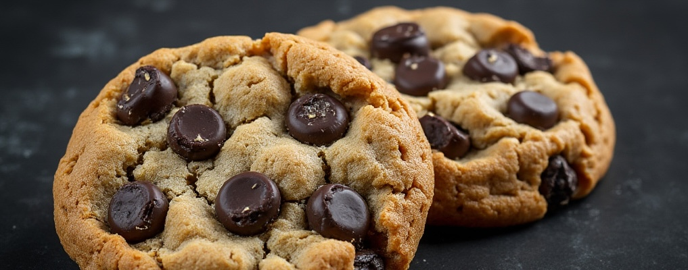

< Back
JavaScript Java Chip Cookies

Description
These cookies are like JavaScript; they're not just about sweetness but also about functionality.
Baking them requires a bit more skill, akin to coding in JavaScript, but the result is interactive and delightful,
just like a well-scripted website.
Ingredients
- Butter - Softened for the base, like the foundation of your script.
- Sugar - Granulated and brown, for that sweet interaction.
- Eggs - Binding everything together, like variables in your code.
- Vanilla Extract - A touch of flavor, think of it as a string literal.
- Flour - All-purpose, the structure you can't do without.
- Baking Soda - For lift and spread, like functions that expand the outcome.
- Salt - Just a pinch to enhance flavors, akin to debugging your code.
- Chocolate Chips - Semi-sweet or dark, the objects you manipulate.
- Coffee Beans or Coffee Powder - Finely ground or chopped, adding the Java aspect, like events in JavaScript.
Steps
- Preheat Oven
- Set your oven to 350°F (175°C), getting it ready for the JavaScript action.
- Cream Together Butter and Sugars
In a large bowl:
- Beat 1 cup of softened butter with 3/4 cup of granulated sugar and 3/4 cup of brown sugar until fluffy, like setting up your environment.
- Add Wet Ingredients
- Add 2 large eggs, one at a time, mixing well after each, ensuring your code (or in this case, dough) runs smoothly.
- Stir in 1 teaspoon of vanilla extract for that flavor enhancement.
- Combine Dry Ingredients
- In another bowl, sift together 2 1/4 cups of all-purpose flour, 1 teaspoon of baking soda, and 1/2 teaspoon of salt.
- Gradually blend into the butter mixture, like gradually building your program.
- Add the Chips and Coffee
- Fold in 2 cups of chocolate chips and 1/2 cup of finely ground coffee beans or 2 tablespoons of coffee powder, giving your cookies that distinctive Java Chip taste.
- Prepare for Baking
- Scoop tablespoon-sized balls of dough onto a parchment-lined baking sheet, spacing them like you would elements in a UI.
- Bake
- Bake in the preheated oven for 10-12 minutes until the edges are just turning golden, like watching a script execute to completion.
- Cool
- Let the cookies cool on the baking sheet for 5 minutes before transferring to a wire rack to cool completely, akin to finalizing your project.
< Back